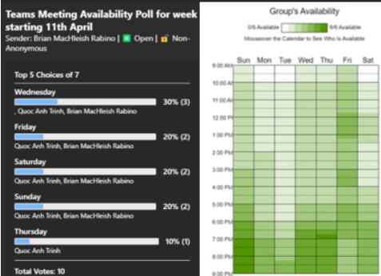
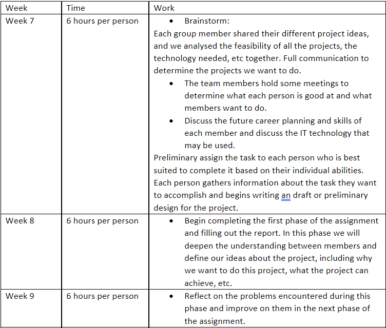
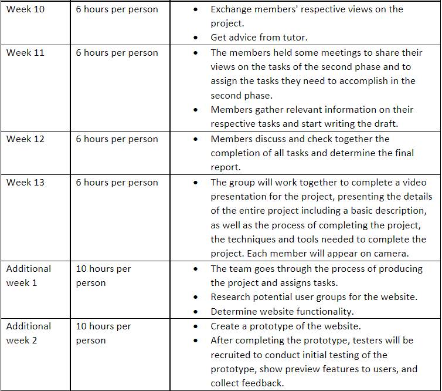
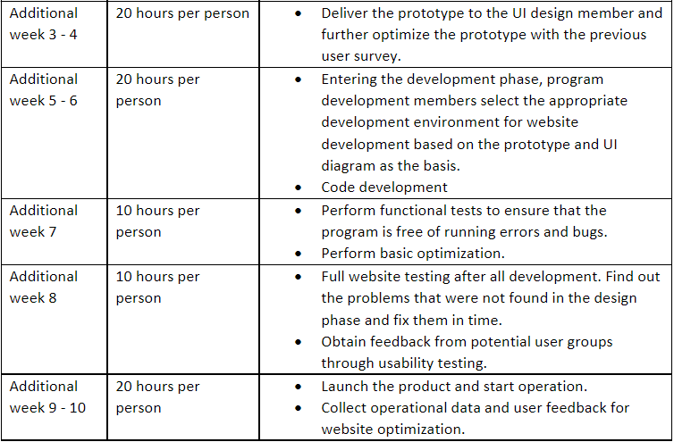

Overview
Topic
Gallery Exhibitor proposes to virtually exhibit art. With an art gallery experience that is accessible on the internet instead of real-life, with all the convenience and all-pervasiveness that entails. This platform enables the wide-spreadability of artwork and increases its potential for exposure across all demographs of people. The art gallery as a physical concept, and the art world as an institution is gatekept and made exclusive. Exhibition tickets are expensive, exposure and word are limited across narrow cliques, the ability of an artist to be shown, and thus a level of elitism is maintained. And for something like art, which poses a perspective and analysis of our reality, of society and the human condition, its exclusivity is major mishap in arts development and our culture.
Gallery Exhibitior democratises the viewing of art, it makes it accessible from the unanimous computer, it makes its admission free of charge, spreadability vast over social media, etc. and it means any artist can display their artworks. This adds to our culture, expands the potential art can have on us, allows for greater audiences and more artists of any beginning.
Motivation
Gallery Exhibitior is important in the way it can change how we experience art. It globalises and democratises art. With the pandemic exposing the reality of our dependence on the web, and its power at maintaining parts of what was previous our day to day. It proved the potential and importance the computer experience can provide for us. Post-pandemic, the state of our culture will have these inclusions and developments integrated. This posits Gallery Exhibitior in the now. Additionally, art is becoming increasingly digitised, with the development of NFTs enabling and integrating blockchain and commercialisation in the buying and selling of art works. This new landscape poses Gallery Exhibitor in fertile breeding conditions conceptually.
Landscape
Virtual exhibitions popped up on big art museum websites over the course of the pandemic. It was also possible to build a 3D world that would mimic a virtual art gallery. However, Gallery Exhibitior is conceptually and fundamentally different in its goal. While those were institutionally driven, or personally driven, Gallery Exhibitior is a purpose built open tool for virtualising exhibitions. It’s a platform that provides accessibility, and makes open-source and universal the concept. It allows users and audiences to shape the art experience themselves.
Aims
Gallery Exhibitior: - to create a virtual art exhibition experience.
Make a 3D Movable space
Allows users to navigate and walk through the virtual art gallery. This is fundamental to the idea so its important this is achieved in the prototype/demo.
Make the artworks viewable on the walls
Have them displayed and approachable. This again is fundamental and important to be present in the early developments.
Open-source tool
Allows users to upload their own files to render in the world. Customise the layout of the space and to generate links for their creation. This is an end goal and a lot of development and programming would be needed.
Inclusion of sound and video
To include these encodings, and software elements is another late-goal.
Plans and Progress
The Beginning
Since the inception of the Gallery Exhibitor idea by one of our team members, Darcy, our team have taken an initiative to bring the concept to life: A virtual gallery web application that brings the greatest art pieces that the internet has to offer, straight to your device hassle-free. In starting this project, our team had to carefully think about the scope of the overall object, the feasibility, technology limitations, viable timeframes, and what we could do given the time we were given.
At first, we deliberated on what kind of application we wanted to build. Would it be a stand-alone application, and if so, would we have to build the engine from scratch by programming it? Unfortunately, with our team members having very limited experience in coding and programming, that wasn’t an option. We then turned to using a pre-existing engine to potentially create and compile the program for us, which was a significantly less complicated task compared to building the entire engine from scratch. However, we were unsure whether the original goal of the project would be met, specifically ‘straight to your device, hassle-free’. This type of goal implied that the application would be light, easy to run, and available anywhere at any time. Thus, our group had settled on building a web-based application, accessible from your browser, which is, in our progressively increasingly technology-reliant society, always a pocket’s reach away.
The first step into development
The team had come to a crossroads in terms of what kind of web-engine we wanted to use. Upon further research and findings, we found a website for a WebGL game engine named PlayCanvas, an open source HTML5 based game engine. The game engine had provided everything we wanted, built on WebGL for browser integration and application, and an in-app builder for the gallery itself that a user may traverse. In retrospect, the use of a game engine was a natural choice, as the user would use our application Gallery Exhibitor as an intermediary between the user and the virtual gallery.
We now had a base-line idea of the application we wanted to build, and the means to do so in terms of computing and technological solutions. The next phase of the project would be setting up the means to have a successful project over an extended period, which was the rest of the semester beginning from Week 6. After forming groups, we quickly chose a medium in which the team can communicate and relay information quickly and easily, in which we selected Microsoft Teams.
Microsoft Teams had proven a worthy asset to the project’s lifespan, allowing team members to constantly communicate on what needs to be done, what tasks are assigned to each member, and if there are any questions or problems that arise, it can be quickly resolved. With the software’s file-sharing system, which provides real-time live editing and collaboration with team members, we developed project reports to be submitted at certain deadlines in order to ensure progress was being made during development.
The team was also instructed to create a basic website using HTML and CSS through GitHub Pages. As a result, the team had also created a GitHub Repository in which we used to push and pull any changes made to the team’s website. Admittedly, due to the file-sharing capabilities of Microsoft Teams, and the website being only one part of an entire project, the GitHub trail does not show much activity.
Before the first deadline and milestone of the project, our team had opted to use a third-party extension of Microsoft Teams named Polly, an extension aimed to make polls quickly and easily, allowing users to vote straight from Teams. However, the limitations of Polly were quite evident, forcing our polls to be a question of what days everyone is available, rather than the exact range of hours when all team members are available. An example of a typical Polly poll is depicted below (left).

This proved to be an inefficient method before the first deadline and had hindered the development of the first project report. Thus, after submission of the first report, the team had changed to a more descriptive scheduling application named when2meet. This is depicted above (right), in which a darker green represented more available members. Immediately, this allowed our team to proceed with a more sophisticated availability scheduler and clearer picture on the next available meeting.
After the first report had been submitted, our team continued the implementation of the web application. Before building the prototype and project deliverable for the final report, the team had thought about first creating the foundations of the visualized website. Our team thought about how, in the future, we could create an easy-to-navigate, minimalistic user interface which would result in a visually pleasing user experience. This is aimed for both the creators and visitors of the virtual gallery. Our web application was envisioned to make image-sharing and presentation a more fun, easy-to-use ordeal, hence it was important for our team to establish a thematic, consistent, and aesthetically modern design.
Upon further deliberation, our team had selected a prototype-building, blueprint web application named Figma to present a foundation for the application itself, as well as providing another deliverable to be submitted in the final report. However, due to time constraints, the team had opted into putting the limited time available into creating a working demo environment with the web application.
Creating the Project Deliverable(s)
As the founder of the original idea, our team member Darcy had taken the initiative to tackle the challenge of building the Virtual Gallery through the PlayCanvas web application. This involved creating an account, logging in, and using PlayCanvas’ proprietary software and assets to build the virtual environment in which a user can explore. The virtual environment would consist of a large 3D space, laid out virtually, replicating a gallery exhibition. The virtual walls would then consist of user images.
This process was lead by Brian, who learned how to create and manipulate assets inside the PlayCanvas environment, and assisted by Darcy, who provided the vision and creative direction. This involved technical programming knowledge in some form, and the issue was that none of the team had any coding experience except for Brian. The PlayCanvas web engine involves JavaScript, but was not a large majority of the project. PlayCanvas themselves offer PlayerMovement scripts which made the coding experience much easier.
The result is the final deliverable below:
https://playcanv.as/p/ifB6uFzA/Due to the scope and timeframe of the project, our team deemed the initial plan to embed the PlayCanvas web application into our website as unfeasible, and thus we have provided a demo web application. In the future, if we were to continue the project and pass the plan onto another team, the next steps would be to properly secure a website separately from GitHub, employed with standard cybersecurity practices and protocols, and attempt to embed the web application into the hosted website.
Currently, the PlayCanvas web application is being hosted and published by PlayCanvas themselves. However, PlayCanvas offers download functionalities to allow for developers to export and publish the PlayCanvas projects separately from PlayCanvas servers. It is recommended that in the future, hosting requirements must be carefully looked at to determine how much computing power and bandwidth is needed to handle the hosting of a web application, with user numbers only limited by how much server processing power the server has.
Roles
Scope and Limits
The aim of this project is to create a platform for creators to able to publish their artwork in a virtual 3D space which will allow users all over the world to be able to virtually view the artwork in a 3D navigable world, which is modelled off a gallery. The essential list of features we are initially adding consists of the ability for artists to be able to upload a set of images or videos to the software, edit their sizes then be able to generate and customize a 3D space that contains the media. Another essential feature we would like to add is the ability for users to most importantly be able to view and interact with the art but also to be able to leave comments and be able to communicate with other users that are also in the exhibition. We are currently only planning on users being able to communicate via text on chat platform so this mean that users will not be able to communicate via live audio or video conferencing this due to limitations we face of time constraints and resources, in addition to this our ability to make the platform mobile friendly will also constrained rendering the website to best most optimally run-on desktops. We are currently planning on using technologies such as JavaScript, PlayCanvas, WebGL and CSS for the creation of the website and we will be hosting the website on GitHub. Due to time constraints our current deliverable will only be limited to a prototype that gives you an idea of our overall ambition, the prototype will only be able show how our 3D art gallery world will look like.
Tools and technologies
The website will be designed and tested mainly using Game Engine and Coding Languages. As the website is decided to be web-game engine based, we will be using the WebGL game engine and the creative tool Playcanvas. We will be using WebGL 2.0 to draw the 3D graphic of the online art exhibit and simulate real-life physics in the gallery. Specifically, PlayCanvas version 1.53.2 will be used to create the actual web application and generate the 3D environment of the gallery. PlayCanvas is 100% Javascript and built entirely on HTML5 and related APIs like WebGL, which we will be using.
Currently, the standard version of PlayCanvas is free for users to sign up for. However, it only offers up to 1GB of storage, which likely won’t be enough for our gallery website as well as no access to a private project. To account for the size of the website and its content of 3D arts, a personal PlayCanvas software license can be purchased for $15/month. This will enable a 10GB storage for the website while giving us the ability to increase the privacy of the project. As of now, there is no educational formal discount, however, a proposal can be made at PlayCanvas's email.
The main Hardware needed for PlayCanvas is flexible, as PlayCanvas can run in all major browsers, so a laptop or a PC is ideal for this project. It is important to note that Internet Explorer 11 or Edge is required to run PlayCanvas. PlayCanvas does support mobile, but to account for the size of the gallery, a Desktop PC is recommended.
Our web application, Gallery Exhibitor, will also ensure that the images that are specifically uploaded by creators are not of malicious nature, both in content and in data, aggressively scrutinizing the images to create a safe virtual experience. Which we will prevent through authorization and integrity checking through user permission management, as well as File Sanitization to ensure that malicious creators cannot upload images and data with malicious extensions, such as .php, allowing creators to execute code via the webserver.
In terms of the content uploaded, we will also utilize JavaScript technologies, specifically the getUserMedia API combined with the js-object detect JavaScript library. Utilizing these two libraries gives our web application the ability to ‘see’ the content within images, and with real-time object detection, allows the web engine to detect unwanted, malicious content. Nudity content can also be ignored if chosen, as technologies such as DeepAI uses JavaScript to create a Nudity Detection API. HTML and CSS will also be used for the coding of the website, all our members have had experience with HTML and CSS, which will make it easier for the creation of the website.
Testing
In general, the later errors are found the more expensive it is to fix them, so it is very important to find errors during the design phase and maintenance phase.
We will have six steps to test our website. First, functional testing is required. Functional testing is a quality assurance (QA) process and a kind of black box testing, in which the product is tested item by item according to functional test cases to check whether the product meets the functionality required by users. It includes the testing of various modules of the website such as page link testing, cookie testing, form testing, etc. During functional testing, we need to simulate the use of the actual system. This simulation will be as close as possible to the actual system usage and will create test conditions that are relevant to the user's needs.
The second step will be usability testing, which will combine functional testing with the overall user experience to help us better simulate what the site will look like when it is running and better identify problems during the design phase. Usability testing can be done internally by developers or by recruiting external people to get feedback from potential customer groups. Because our potential users are art-related people. When recruiting testers we can recruit in two groups, creators and viewers. We can distribute recruitment information around art museums, art colleges, art studios and other places. Creators can help us to better test the uploading and editing function etc. Viewers can help us test the layout, information display, discussion forums, etc. The number of testers will be 15-30, according to Nielsen's advice, it is more important to make sure you get the right "who" than "how many". 15 users will find 99% of the problems in one test. A process will be set up so that testers have full access to all of Gallery Exhibitor's features, ensuring that all content will be checked. Testers will then run the test under expert observation, and we will collect test-related information such as eye tracking samples for analysis to ensure that each feature is effective and clean. Through feedback we will also improve the page design.
After that Interface testing and compatibility testing will follow. Interface testing can ensure that all interactions between the web server and the application server interface are completed smoothly. This testing includes checking the communication process and ensuring that error messages are displayed correctly. Compatibility testing ensures that the web application displays correctly on different devices. This testing includes checking browser compatibility, which requires ensuring that JavaScript, AJAX, WebSocket, browser notifications, and authentication requests work as designed in different browsers. This can be done using LambdaTest, a cross-browser testing cloud. Operating system compatibility, checking that the site works smoothly on Windows, macOS, Linux and Unix. Mobile compatibility to ensure that the application works as well on Android as it does on iOS.
Next will be performance testing, which ensures that the site works properly under all loads, that it does not crash easily, and that it recovers quickly after a crash. This involves testing the site at different Internet speeds and how it behaves under normal and peak loads (load testing). To determine the site's breakpoint, we will give it increasing pressure until it stops working (stress testing).
Finally, we will perform security tests with Babel Enterprise, BFBTester or CROSS, which ensures that the site is protected from unauthorized access and harmful operations by viruses or other malware. These tests will help us to find any errors and bugs in the site and allow us to fix them before it is too late. After all the tests are completed, Gallery Exhibitor will be ready for official operation.
Timeframe



Risks
As PlayCanvas is the main tool used to create the Gallery Exhibitor, there is always a risk that it may have limitations that will suppress the project. As of now, the storage of the Engine is a concern, as the standard version only offers up to 1GB of memory, and the upgraded license only offers up to 10Gb, which might be a problem if we were to expand the project further. There is also another licensing option for $50/month which offers 50GB of memory.
There is also the risk of PlayCanvas being difficult to learn and utilize, as most of our group has had no prior experience with it. Upon looking at the reviews and using the engine itself, this risk is minimized as PlayCanvas turns out to be amazing and very welcoming for beginners.
In terms of hardware limitations and risks, the hardware used to create and develop the Gallery Exhibitor may be limited (underlying OS issues and browser problems). For the texture and model assets uploaded to the website, there may not be enough VRAM. There is also the risk of the engine not performing as well as expected on windows with Nvidia graphic cards, as many PC by default uses the lower integrated graphic card to run the browser which PlayCanvas will be running on and lowering its performance of it.
Group processes and communications
As a group we have created a procedure in which all team members can post their availability on the website when2meet, this website allows team members to update availability on an ongoing basis and displays the times in which each person is available, once filled out the table will show the times in which everyone is available then out of those times one of us will send a message some days prior to the meeting date informing every one of the scheduled meeting time for confirmation. Our meetings are mostly conducted online on Microsoft Teams in which we start a recorded meeting where members discuss the project via audio chat and if needed a screen share to help with the meeting. In some cases when our team had class on campus, we did conduct a hybrid type meeting in which some members were not available in class and had to join via Microsoft teams these meetings also do stay recorded so that in circumstance of members not being able to attend the meeting they could get caught up by watching the recording. In the circumstance of team members not communicating/responding to team messages we will attempt to contact them on different platform then what we are using as a team for example via discord, Facebook, or email and if they still do not get in touch, I will have to inform a supervisor. We have found that as group we do not require much back-and-forth communication to be done as we are fine to work by ourselves on each individual part once an initial meeting has been done but we still like to conduct a meeting once every week or more when its closer to the deadline just to touch base with progress and to make sure everything is going on track.